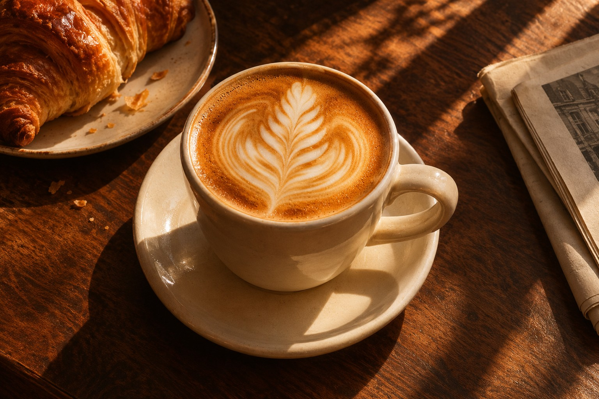

Районная кофейня
Кофе, булка
и доброе утро.
Варим кофе, печём с рассвета и готовим завтраки весь день. Заходите по пути или оставайтесь подольше.
Смотреть меню
Кофе своей обжарки✳Свежая выпечка✳Завтраки весь день
О нас
Место у окна.
Утром на подоконнике остывают булочки, а у стойки уже мелют зерно для первого фильтра. Мы задумали «Утро.» как кофейню по соседству, где можно начать день за большим общим столом.
В гости
Как нас найти.
Санкт-Петербург, переулок Зёрен, 8Ежедневно с 8:00 до 21:00
Кофейня и адрес вымышлены для портфолио.